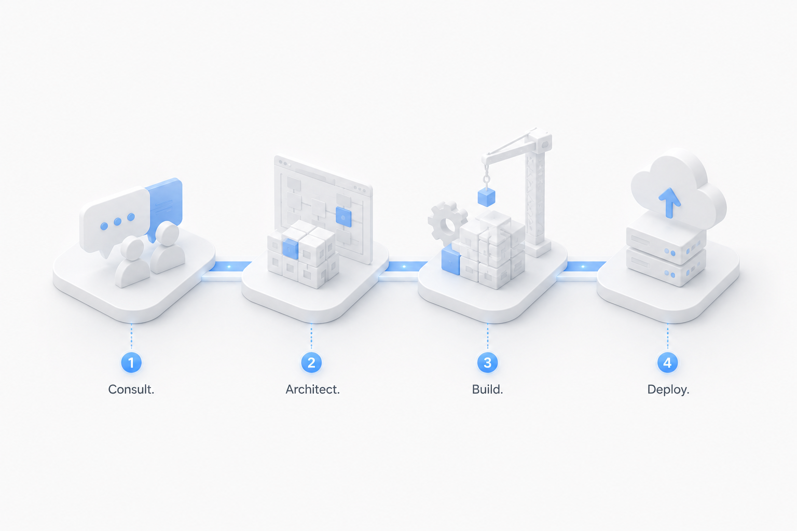
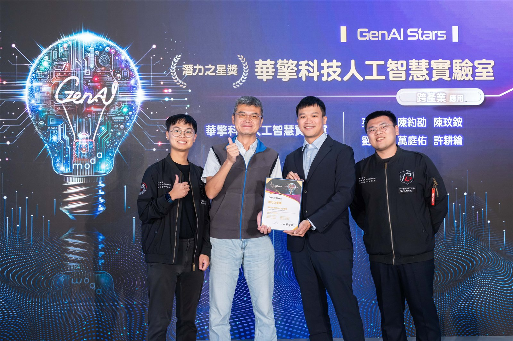

AI 市場快速演進，但採用 AI 的關鍵從來不只是 GPU 的數量，而是一套涵蓋資料、模型、系統與工作流程的完整能力。
ASRock AI Center 的角色，是協助企業從「想做 AI」走到「實際部署 AI」。
0服務領域
0部署模式
0產業實證
從 AI 策略與基礎架構設計，到系統整合與正式部署， ASRock AI Center 協助企業把 AI 構想化為可落地的解決方案。
AI 市場快速演進，但採用 AI 的關鍵從來不只是 GPU 的數量，而是一套涵蓋資料、模型、系統與工作流程的完整能力。
ASRock AI Center 的角色，是協助企業從「想做 AI」走到「實際部署 AI」。

部署的系統需適合於您的資料、工作負載與業務。AI Center 協助您在三種模式間做出最合理的選擇。
精巧型系統，適合本地推論與分點部署。
本地端系統，用於開發、推論與部門級 AI。
機櫃等級的基礎架構，支撐大型模型與集中式服務。

由數位發展部主辦、台灣最具指標性的國家級生成式 AI 應用競賽 — GenAI Stars 2025，肯定 ASRock AI Center 以「華擎 AI 系統暨 RagLingo 翻譯」於企業 AI 應用上的實踐力。從顧問規劃到實際部署，我們持續用 AI 為產業創造可量化的價值。
閱讀完整故事 ↗無論您正在探索 AI 應用場景、評估基礎架構，或準備正式部署，ASRock AI Center 都能協助您找出正確的下一步。